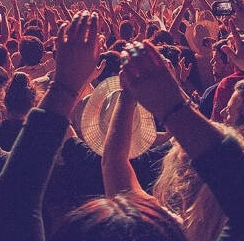

Nóticias do Mundo do Pop
há 10 anos, o POP Light é o principal site sobre música pop do país. O vertical recebe por ano mais de 120 milhões de acessos e está entre os veículos mais populares nas redes sociais, somando mais de 3 milhões de seguidores no Facebook, Instagram, Twitter, YouTube e SnapChat.
Nossa missão é: "trazer diariamente conteúdo original e informativo para o público que quer acompanhar, em tempo real, os acontecimentos no cenário musical pop nacional e internacional.".
Nossa Sede
Nossa sede está localizada no coração da cidade.
Novidades!
- Alterna POP
- Cronograma de Eventos
- Últimas Notícias
- Entrevistas
- Vídeos
- Histórico